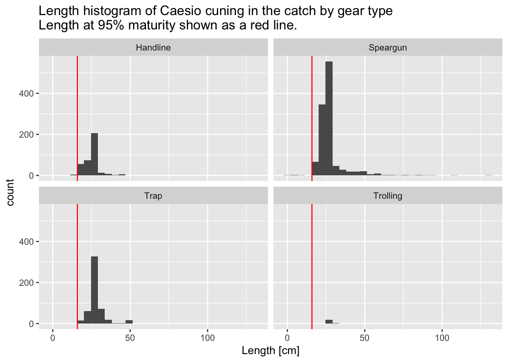
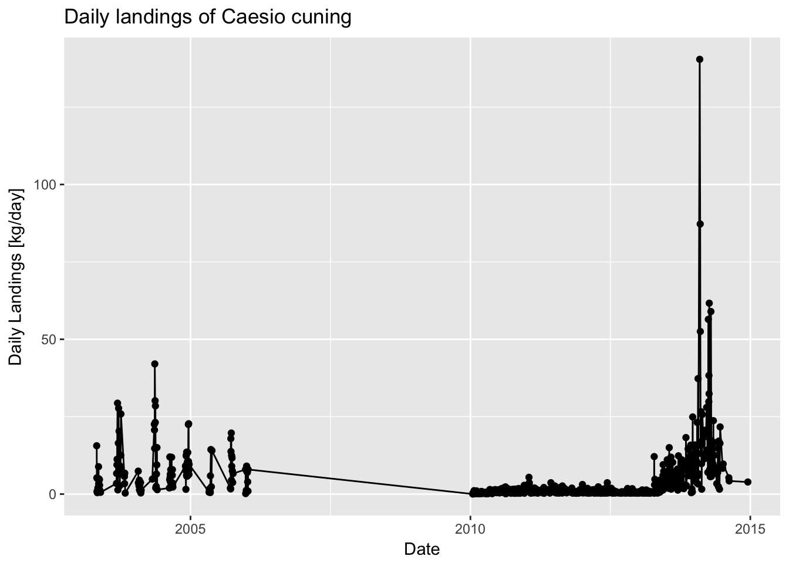

Chapter 3 Fisheries Visualizations
This short document will walk you through some basic fisheries visualizations. You will first load packages that contain useful functions. You will next load your data. Finally, you’ll plot your data in a number of different ways, looking for outliers along the way, and also seeing what interesting things you can say about the data.
This is a very quick introduction, but a great resource for learning more is a free book called R for Data Science.
3.1 Load libraries
The first step in any analysis is the load the packages you will need for your analysis. Loading packages allows you to use powerful functions not included in “base” R.
For this analysis, you will use the tidyverse package, which actually loads a group of useful packages including tidyr, dplyr, and ggplot2. tidyr and dplyr are very handy packages for manipulating data, while ggplot2 is one of the best packages from plotting data. You will also use Lubridate, which helps dealing with dates and times.
library(tidyverse)
library(lubridate) 3.2 Load data
Next, you’ll load the data you’ll be using for the analysis. First load the landings data which includes catch, effort, and length measurements. The data are stored as a csv under a “data” folder. Store these data to a data frame called “landings_data.” Next, load the life history parameter data file. These data are also stored as a csv under a “data” folder. Store these data to a data frame called “life_history_parameters.”
As data are loaded in, you’ll see that R automatically determines what type of variable each column represents - integers (for numbers), characters (for words), etc.
landings_data <- read_csv("_data/sample_landings_data.csv")
life_history_parameters <- read_csv("_data/life_history_parameters.csv")Let’s take a quick look at what’s in each of these data frames. We can use the “head” function to get a quick summary.
head(landings_data)## # A tibble: 6 × 8
## Year Date Trip_ID Effort_Hours Gear Species Length_cm
## <int> <chr> <int> <int> <chr> <chr> <dbl>
## 1 2003 4/30/03 1 10 Trap Caesio cuning 36
## 2 2003 4/30/03 1 10 Trap Caesio cuning 29
## 3 2003 4/30/03 1 10 Trap Caesio cuning 34
## 4 2003 4/30/03 1 10 Trap Caesio cuning 36
## 5 2003 4/30/03 1 10 Trap Caesio cuning 34
## 6 2003 4/30/03 1 10 Trap Caesio cuning 28
## # ... with 1 more variables: Weight_g <dbl>The “landings_data” data frame is from a fishery-dependent landing site survey. The species included in this data set is Caesio cuning, a yellowtail fusilier. The survey is conducted every few days at a major landing site, and thus is just a sub-sample of the total catch. However, it is conducted throughout the year and during each season, and at the largest landings site with fishers using several different gear types and fishing throughout the entire species range, so it is fairly representative of the total catch. You can see the data frame has eight columns, with each row being an individual fish catch measurement. The columns include the year and date when the measurement was collected, the fishing trip ID, how many hours were fished for each trip, what gear was used, the species, the length of the fish, and the weight of the fish. We’ll be able to use these data to create length-frequency histograms that describe the size structure of the population, as well as trends in catch and CPUE.
head(life_history_parameters)## # A tibble: 1 × 11
## Species Common L_inf k t0 M Wa
## <chr> <chr> <dbl> <dbl> <dbl> <dbl> <dbl>
## 1 Caesio cuning Yellowtail fusilier 62.2 0.32 -0.42 0.8915981 0.0208
## # ... with 4 more variables: Wb <dbl>, m50 <dbl>, m95 <dbl>, maxAge <int>The “life_history_parameters” data frame includes several important life history parameters that were found doing a literature review of this species. L_infinity, k, and t0 describe the age-to-length relationship using the von Bertalanffy growth equation. M represents natural mortality. Wa and Wb describe the length-to-weight relationship. m50 and m95 describe the lengths at which 50% and 95% of the fish are mature, respecitvely. maxAge is the maximum age of the fish.
3.3 Plot data
Let’s first look at the length data from the catch, which gives an indication of the size structure and health of the population. To do this in R, you start by taking the landings data and working through a series of “pipes”, which progressively analyze the data from one step to the next and are shown with the “%>%” operation. Essentially, the output of one line is fed into the input of the next line. In all of the code below, there are some helpful comments to tell you what each line is doing. Comments start with the “#” operation, and are not evaluated by R - they are simply there to document the code.
Let’s look at the length data for 2014. We’ll create a histogram of the length data, which shows how many individuals of each size class were measured in the catch. On the histogram, we’ll also include the length at which fish mature to get a sense of how sustainable the catch is - the catch should be composed mostly of mature fish. This information comes from the life history parameter data input file. We’ll also include the length of a theoretically infinitely old fish to see if there are any outliers - we wouldn’t expect for there to be any fish longer than this!
landings_data %>% ## Start with the landings data frame
filter(Year == 2014) %>% ## Filter data to only look at length measurements from 2014
ggplot(aes(Length_cm)) + ## Plot length data
geom_histogram() + ## Plot a histogram of the length data
geom_vline(aes(xintercept=life_history_parameters$L_inf),color="black") + ## Add a black vertical line for L infinity, the length of a theoretically infinitely old fish. No measured fish should be greater than this length. Use the life_history_parameter data frame to get this value. You can use the "$" operator to grab a specific column from a data frame. In this case, you are grabbing the column title "L_inf" from "life_history_parameters"
geom_vline(aes(xintercept=life_history_parameters$m95),color="red") + ## Add a red vertical line for m95, the length at which 95% of fish are mature. Any fish below this length may be immature. Use the life_history_parameter data frame to get this value.
xlab("Length [cm]") + ## Change x-axis label
ggtitle("Length histogram of Caesio cuning in the catch\nLength at 95% maturity shown as a red line.\nL_Infinity shown as a black line.") ## Add figure title
You’ll notice that a few of the fish are much older than a fish that is theoretically infinitely old! This does not necessarily mean it is impossible for fish to reach these lengths, but rather that the average fish reaches asymptotic age at this length. However, lengths longer than this should still be flagged as possible measurement errors. In fact, it appears that the two measurements greater than 200cm were indeed measurement errors, so let’s filter those out from the data.
landings_data <- landings_data %>%
filter(Length_cm < 200) ## Re-write landings data frame to only include measurements with lengths less than 200cm
landings_data %>% ## Start with the landings data frame
filter(Year == 2014) %>% ## Filter data to only look at length measurements from 2014
ggplot(aes(Length_cm)) + ## Plot annual landings versus year
geom_histogram() + ## Plot a histogram of the length data
geom_vline(aes(xintercept=life_history_parameters$L_inf)) + ## Add a black line for L infinity, the length of a theoretically infinitely old fish. No measured fish should be greater than this length. Use the life_history_parameter data frame to get this value.
geom_vline(aes(xintercept=life_history_parameters$m95),color="red") + ## Add a red line form95, the length at which 95% of fish are mature. Any fish below this length may be immature. Use the life_history_parameter data frame to get this value. +
xlab("Length [cm]") + ## Change x-axis label
ggtitle("Length histogram of Caesio cuning in the catch\nLength at 95% maturity shown as a red line.\nL_Infinity shown as a black line.") ## Add figure title
Now things look more reasonable! Most fish in the catch also appear to be mature, which is a good sign for the sustainability of the fishery.
You might also be interested in seeing how the size composition varies by gear type. It appears as if the size structure is about the same from each gear, although by far the most amount of fish are caught using speargun. Very few fish are caught using trolling.
landings_data %>% ## Start with the landings data frame
filter(Year == 2014) %>% ## Filter data to only look at length measurements from 2014
filter(Length_cm < life_history_parameters$L_inf) %>% ## Filter out any observations greater than L_infinity. These are likely errors.
ggplot(aes(Length_cm)) + ## Plot annual landings versus year
geom_histogram() + ## Plot a histogram of the length data
geom_vline(aes(xintercept=life_history_parameters$L_inf)) + ## Add a black line for L infinity, the length of a theoretically infinitely old fish. No measured fish should be greater than this length. Use the life_history_parameter data frame to get this value.
geom_vline(aes(xintercept=life_history_parameters$m95),color="red") + ## Add a red line form95, the length at which 95% of fish are mature. Any fish below this length may be immature. Use the life_history_parameter data frame to get this value. +
xlab("Length [cm]") + ## Change x-axis label
ggtitle("Length histogram of Caesio cuning in the catch by gear type\nLength at 95% maturity shown as a red line.\nL_Infinity shown as a black line.") + ## Add figure title
facet_wrap(~Gear) ## This tells the figure to plot by all different gear types
Next we can calculate the percentage of mature fish in the catch. Over 97% of the fish are mature throughout the time series, which is a great sign! This matches up with what we see in the histogram.
landings_data %>% ## Start with the landings data frame
#filter(Year == 2014) %>% ## Only look at length measurements from 2014
mutate(Mature = ifelse(Length_cm > life_history_parameters$m95,1,0)) %>% ## Add a column to the data that indicates whether each length measurement is from a mature or immature fish. If it's mature, this value should be 1; if immature, 0.
group_by(Year) %>% ## Group by year so we can see the percent mature for every year
summarize(Percent_Mature = sum(Mature) / n() * 100) ## The percentage mature is equal to the number of mature fish divided by the total number of fish and multiplied by 100## # A tibble: 9 × 2
## Year Percent_Mature
## <int> <dbl>
## 1 2003 98.57595
## 2 2004 97.97639
## 3 2005 98.60465
## 4 2006 100.00000
## 5 2010 91.81692
## 6 2011 99.77629
## 7 2012 99.65398
## 8 2013 99.46164
## 9 2014 99.55709Next, lets plot a time series of daily landings data.
landings_data %>% ## Start with the landings data frame
mutate(Date = mdy(Date)) %>% ## Turn the date column into a date variable that R recognizes
mutate(landings_kg = Weight_g/1000) %>% ## Create a new column in the data frame that is landings in kilograms instead of grams
group_by(Date) %>% ## Group the data by date so we can calculate the total landings by date
summarize(daily_landings = sum(landings_kg)) %>% ## For each date, sumamrize the sum of all daily landings
ggplot(aes(x=Date,y=daily_landings)) + ## Plot daily landings versus date
geom_point() + ## Make a scatter plot
geom_line() + ## Also add a line connecting the points
ylab("Daily Landings [kg/day]") + ## Change the y-axis title
ggtitle("Daily landings of Caesio cuning") ## Add a figure title
It is a little diffcult to observe trends here since there is a lot of variation between days, other than that there was no data collected between 2006 and 2010. Instead, you may wish to aggregate the catch data by year in order to look at trends in annual landings. Because this particular survey only samples the catch on certain days, it does not represent the total volume of landed catch. Therefore, it’s important to normalize the sampled catch by the number of sampling days. This will mean that trends represent actual increases or decreases in catch, not just increases or decreases in how frequently the catch is sampled.
Looking at this plot, it now becomes more clear that landings decrease significantly between 2004 and 2010, but have been increasing during the last few years. This could be indicative of a recovering fishery, or could mean increasing fishing pressure.
landings_data %>% ## Start with the landings data frame
mutate(Date = mdy(Date)) %>% ## Turn the date column into a date variable that R recognizes
mutate(Year = year(Date)) %>% ## Create a year column using a year format R recognizes
group_by(Year) %>% ## First, group the data by year
summarize(Annual_Landings_kg = sum(Weight_g,na.rm=TRUE)/1000/n_distinct(Date)) %>% # Next, summarize the total annual landings per year. Also convert from grams to kilograms by dividing by 1000. Also, normalize the annual catch by the number of survey days each year.
ggplot(aes(x=Year,y=Annual_Landings_kg)) + ## Plot annual landings versus year
geom_point() + ## Make a scatter plot
geom_line() + ## Also add a line connecting the points
ylab("Normalized annual Landings [kg/survey day/year]") + ## Change the y-axis title
ggtitle("Normalized annual landings of Caesio cuning") ## Add figure titleAgain, you may be interested in looking across different gear types. Doing so, it now becomes clear that the recent increase in catch seems to be concentrated in speargun and trap fishing. Meanwhile, catch from muroami, a very destructive type of gear where nets are driven into the reef, has dropped to 0 since a ban of that gear in 2012 - a good sign that mangement regulation is working.
landings_data %>% ## Start with the landings data frame
mutate(Date = mdy(Date)) %>% ## Turn the date column into a date variable that R recognizes
mutate(Year = year(Date)) %>% ## Create a year column using a year format R recognizes
group_by(Year,Gear) %>% ## First, group the data by year and gear type
summarize(Annual_Landings_kg = sum(Weight_g,na.rm=TRUE)/1000/n_distinct(Date)) %>% # Next, summarize the total annual landings per year. Also convert from grams to kilograms by dividing by 1000. Also, normalize the annual catch by the number of survey days each year.
ggplot(aes(x=Year,y=Annual_Landings_kg)) + ## Plot annual landings versus year
geom_point() + ## Make a scatter plot
geom_line() + ## Also add a line connecting the points
ylab("Normalized annual Landings [kg/survey day/year]") + ## Change the y-axis title
ggtitle("Normalized annual landings of Caesio cuning by gear type") + ## Add figure title
facet_wrap(~Gear) ## This tells the figure to plot by all different gear types
Finally, you may also be interested in plotting median catch-per-unit-effort (CPUE). CPUE is calculated by dividing the catch of each fishing trip by the number of hours fished during that trip. The median is taken in order to remove outliers - some fishers are much more efficient than others.
CPUE appears to have increased significantly during the last years. This may be due to increasing abundance in the water, which would be a good thing, but may also be indicative of increased gear efficiency coinciding with the transition to traps and spearguns, which may be concerning.
landings_data %>% ## Start with the landings data frame
mutate(Date = mdy(Date)) %>% ## Turn the date column into a date variable that R recognizes
mutate(Year = year(Date)) %>% ## Create a year column using a year format R recognizes
group_by(Year,Trip_ID) %>% ## Group by year and Trip ID so that you can calculate CPUE for every trip in every year
summarize(Trip_CPUE = sum(Weight_g/1000) / mean(Effort_Hours)) %>% ## Calculate the CPUE for each trip by dividing the sum of the catch, converted from grams to kilograms, by the trip by the number of fishing hours
group_by(Year) %>% ## Next, just group by year so we can calculate median CPUE for each year across all trips in the year
summarize(Median_CPUE = median(Trip_CPUE)) %>% # Calculate median CPUE for each year
ggplot(aes(x=Year,y=Median_CPUE)) + ## Plot median CPUE versus year
geom_point() + ## Make a scatter plot
geom_line() + ## Also add a line connecting the points
ylab("Median CPUE [kg/hour]") + ## Change the y-axis title
ggtitle("Median CPUE for Caesio cuning") ## Add figure titleWhen looking at all data together - almost all fish in the catch are mature, catch is increasing, and CPUE is increasing - all signs point to a fairly healthy fishery, which is likely recovering since the ban of muroami fishing nets.